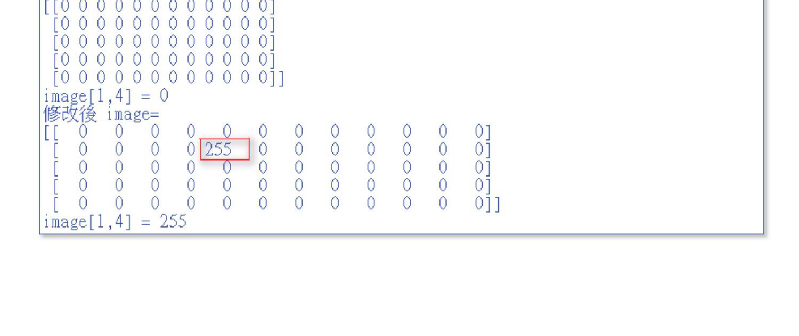
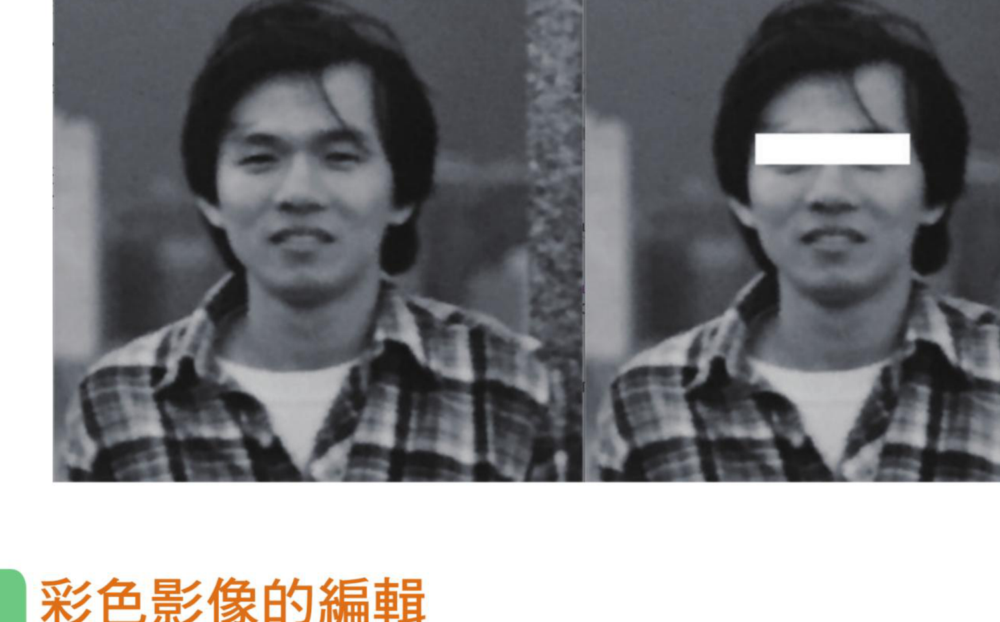
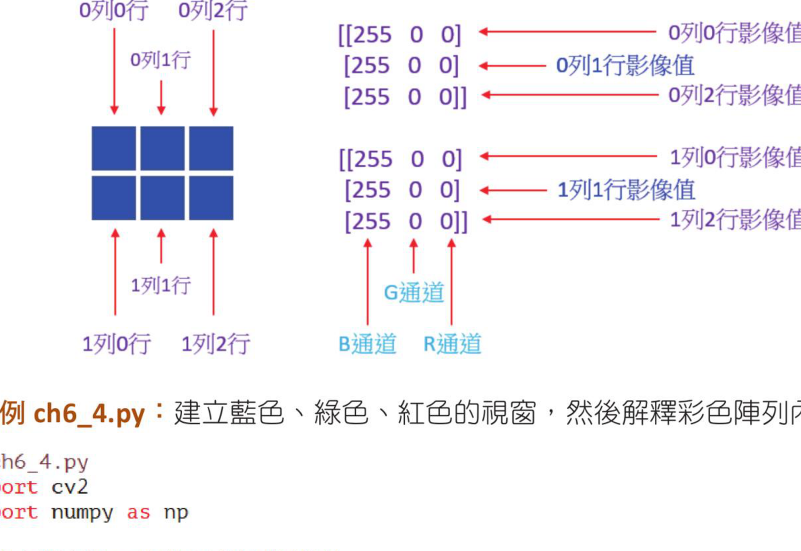
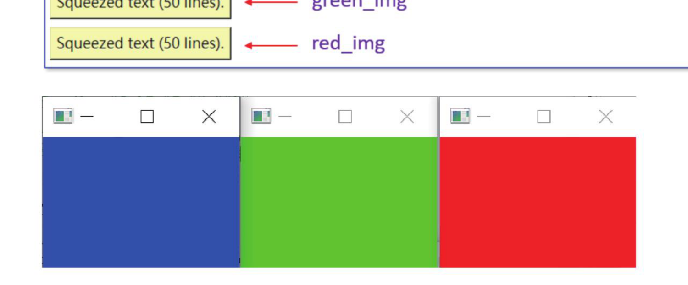
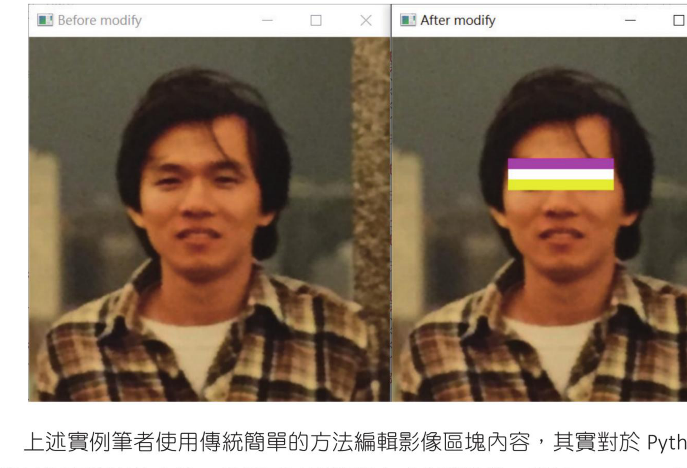
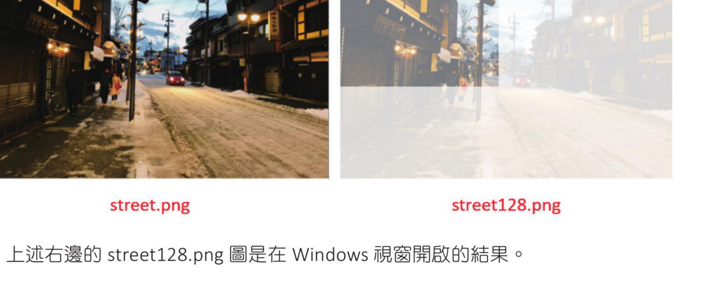
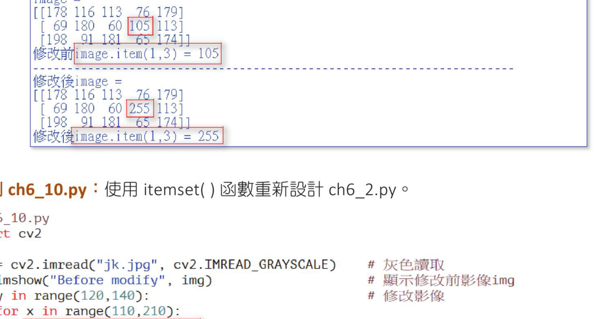
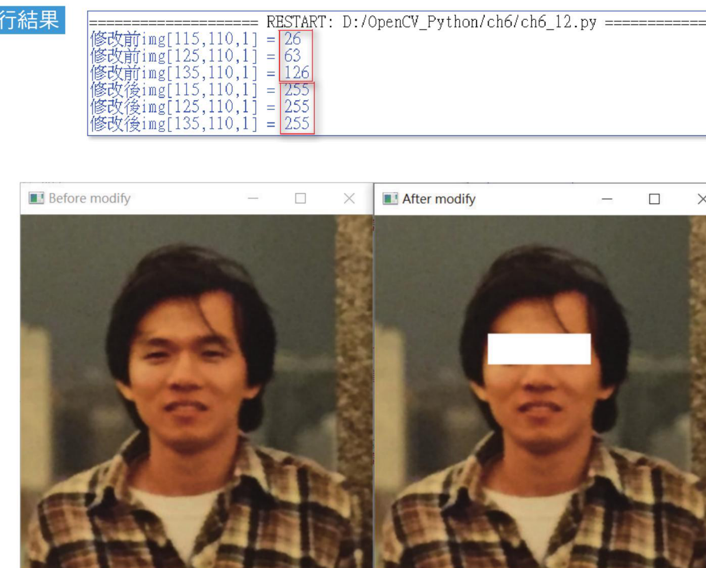
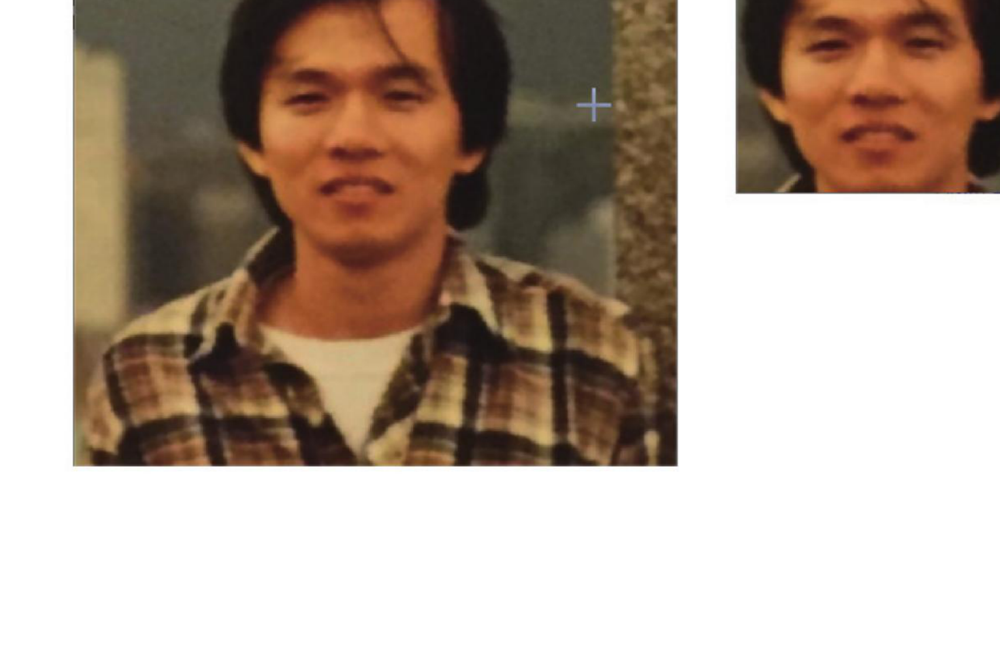
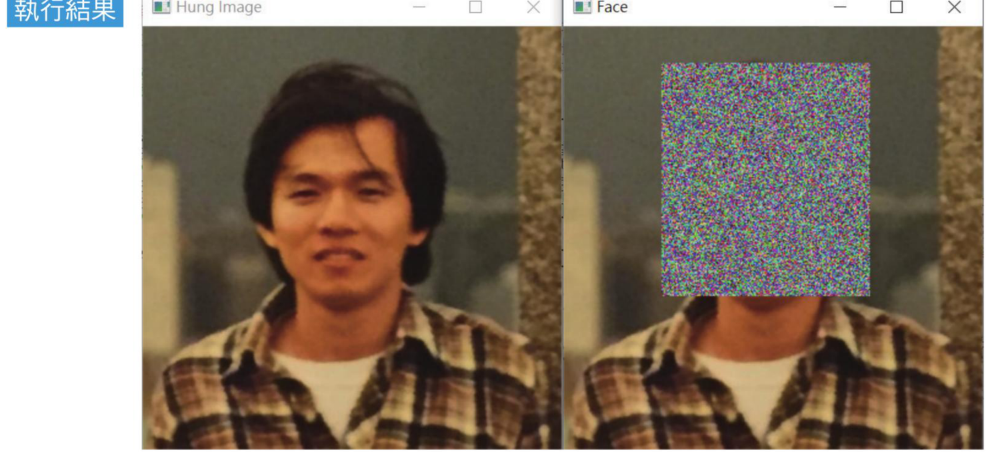

第 6 章
图像处理的基础知识
本章共 5 个小节 · 灰度像素、彩色像素、alpha、item/itemset、ROI
本章把前面学过的 NumPy 数组知识应用到具体图像处理：读取与修改灰度像素、编辑 BGR 彩色像素、处理 alpha 透明通道、
使用 item() 与 itemset() 读写像素，以及用切片取得 ROI 感兴趣区域。
6-1
灰度图像的编辑
灰度图像是二维数组。读取单个像素时使用 image[y, x]，其中 y 是行索引，x 是列索引。
修改像素时直接给这个位置赋值即可。
程序实例 ch6_1.py：自创 5×12 灰度图像数组并修改像素
# ch6_1.py
import cv2
import numpy as np
image = np.zeros((5, 12), np.uint8)
print(f"修改前 image =\n{image}")
print(f"image[1, 4] = {image[1, 4]}")
image[1, 4] = 255
print(f"修改后 image =\n{image}")
print(f"image[1, 4] = {image[1, 4]}")

单一灰度像素读取与修改，参考原书第 6-2 页。
真实灰度图像也可以用同样方式编辑。下面例子读取 jk.jpg 为灰阶图，然后把眼睛区域改为白色长条。
程序实例 ch6_2.py：读取灰度图像并遮住眼睛区域
# ch6_2.py
import cv2
img = cv2.imread("jk.jpg", cv2.IMREAD_GRAYSCALE)
cv2.imshow("Before modify", img)
for y in range(120, 140):
for x in range(110, 210):
img[y, x] = 255
cv2.imshow("After modify", img)
cv2.waitKey(0)
cv2.destroyAllWindows()

逐像素修改灰度图像局部区域，参考原书第 6-3 页。
6-2
彩色图像的编辑
彩色图像是三维数组，形状通常是 (height, width, 3)。第三维的索引 0、1、2
分别代表 B、G、R 通道。单个彩色像素可以看作 [B, G, R] 三元素数组。

彩色图像数组的列、行与通道关系，参考原书第 6-4 页。
程序实例 ch6_3.py：建立 2×3×3 的蓝、绿、红数组并列印内容
# ch6_3.py
import cv2
import numpy as np
blue_img = np.zeros((2, 3, 3), np.uint8)
blue_img[:, :, 0] = 255
print(f"blue image =\n{blue_img}")
green_img = np.zeros((2, 3, 3), np.uint8)
green_img[:, :, 1] = 255
print(f"green image =\n{green_img}")
red_img = np.zeros((2, 3, 3), np.uint8)
red_img[:, :, 2] = 255
print(f"red image =\n{red_img}")
程序实例 ch6_4.py：建立蓝、绿、红色视窗
# ch6_4.py
import cv2
import numpy as np
blue_img = np.zeros((100, 150, 3), np.uint8)
blue_img[:, :, 0] = 255
print(f"blue image =\n{blue_img}")
cv2.imshow("Blue Image", blue_img)
green_img = np.zeros((100, 150, 3), np.uint8)
green_img[:, :, 1] = 255
print(f"green image =\n{green_img}")
cv2.imshow("Green Image", green_img)
red_img = np.zeros((100, 150, 3), np.uint8)
red_img[:, :, 2] = 255
print(f"red image =\n{red_img}")
cv2.imshow("Red Image", red_img)
cv2.waitKey(0)
cv2.destroyAllWindows()

蓝、绿、红三个彩色窗口，参考原书第 6-5 页。
程序实例 ch6_5.py：一次修改一个彩色像素的 BGR 值
# ch6_5.py
import cv2
import numpy as np
blue = np.zeros((2, 3, 3), np.uint8)
blue[:, :, 0] = 255
print(f"blue =\n{blue}")
print(f"blue[0, 1] = {blue[0, 1]}")
blue[0, 1] = [50, 100, 150]
print("修改后")
print(f"blue =\n{blue}")
print(f"blue[0, 1] = {blue[0, 1]}")
程序实例 ch6_6.py：只修改一个像素的单一通道
# ch6_6.py
import cv2
import numpy as np
blue = np.zeros((2, 3, 3), np.uint8)
blue[:, :, 0] = 255
print(f"blue =\n{blue}")
print(f"blue[0, 1, 2] = {blue[0, 1, 2]}")
blue[0, 1, 2] = 50
print("修改后")
print(f"blue =\n{blue}")
print(f"blue[0, 1, 2] = {blue[0, 1, 2]}")
对实际彩色图像，可以一次修改某个像素的 BGR 三个通道，也可以逐通道修改。原书先用循环示范，再给出切片简化写法。
程序实例 ch6_7.py：读取彩色图像并编辑局部色条
# ch6_7.py
import cv2
img = cv2.imread("jk.jpg")
cv2.imshow("Before modify", img)
print(f"修改前 img[115,110] = {img[115, 110]}")
print(f"修改前 img[125,110] = {img[125, 110]}")
print(f"修改前 img[135,110] = {img[135, 110]}")
for y in range(115, 125):
for x in range(110, 210):
img[y, x] = [255, 0, 255]
for z in range(125, 135):
for y in range(110, 210):
for x in range(0, 3):
img[z, y, x] = 255
for y in range(135, 145):
for x in range(110, 210):
img[y, x] = [0, 255, 255]
cv2.imshow("After modify", img)
print(f"修改后 img[115,110] = {img[115, 110]}")
print(f"修改后 img[125,110] = {img[125, 110]}")
print(f"修改后 img[135,110] = {img[135, 110]}")
cv2.waitKey(0)
cv2.destroyAllWindows()

用 BGR 数组值修改彩色图像局部区域，参考原书第 6-7 页。
程序实例 ch6_7_1.py：用切片取代 ch6_7.py 的部分循环
# ch6_7_1.py 的关键差异
img[115:125, 110:210] = [255, 0, 255]
效率
逐像素循环直观但慢；区域颜色替换优先使用 NumPy 切片，例如 img[115:125, 110:210] = [255, 0, 255]。
6-3
编辑含 alpha 通道的彩色图像
含 alpha 的彩色图像是四通道数组，顺序为 B、G、R、A。A 表示透明度，0 是完全透明，
255 是完全不透明。读取 PNG 这类带透明度的文件时，要使用 cv2.IMREAD_UNCHANGED 保留 alpha 通道。
image = cv2.imread("street.png", cv2.IMREAD_UNCHANGED)
程序实例 ch6_8.py：修改 PNG 图像局部 alpha 值
# ch6_8.py
import cv2
img = cv2.imread("street.png", cv2.IMREAD_UNCHANGED)
cv2.imshow("Before modify", img)
print(f"修改前 img[10,50] = {img[10, 50]}")
print(f"修改前 img[50,99] = {img[50, 99]}")
for z in range(0, 200):
for y in range(0, 200):
img[z, y, 3] = 128
print(f"修改后 img[10,50] = {img[10, 50]}")
print(f"修改后 img[50,99] = {img[50, 99]}")
cv2.imwrite("street128.png", img)
cv2.waitKey(0)
cv2.destroyAllWindows()

修改 alpha 后保存 PNG 的结果，参考原书第 6-9 页。
6-4
Numpy 高效率读取与设置像素的方法
原书在这一节对比了传统循环和 NumPy 写法。区域修改优先用切片；单点读取和设置也可以用
item() 与 itemset()。
程序实例 ch6_8_1.py：用一行切片修改 alpha 通道
# ch6_8_1.py
import cv2
img = cv2.imread("street.png", cv2.IMREAD_UNCHANGED)
cv2.imshow("Before modify", img)
print(f"修改前 img[10,50] = {img[10, 50]}")
print(f"修改前 img[50,99] = {img[50, 99]}")
print("-" * 70)
img[0:200, 0:200, 3] = 128
print(f"修改后 img[10,50] = {img[10, 50]}")
print(f"修改后 img[50,99] = {img[50, 99]}")
cv2.imwrite("street128_1.png", img)
cv2.waitKey(0)
cv2.destroyAllWindows()
| 图像类型 | 读取 | 设置 |
|---|
| 灰度图 | image.item(y, x) | image.itemset((y, x), value) |
| 彩色图 | image.item(y, x, channel) | image.itemset((y, x, channel), value) |
程序实例 ch6_9.py：灰度数组的 item() 与 itemset()
# ch6_9.py
import numpy as np
image = np.random.randint(0, 200, size=(3, 5), dtype=np.uint8)
print(f"image =\n{image}")
print(f"修改前 image.item(1, 3) = {image.item(1, 3)}")
image.itemset((1, 3), 255)
print("-" * 70)
print(f"修改后 image =\n{image}")
print(f"修改后 image.item(1, 3) = {image.item(1, 3)}")

使用 itemset() 修改灰度像素，参考原书第 6-10 页。
程序实例 ch6_10.py：用 itemset() 重写 ch6_2.py
# ch6_10.py
import cv2
img = cv2.imread("jk.jpg", cv2.IMREAD_GRAYSCALE)
cv2.imshow("Before modify", img)
for y in range(120, 140):
for x in range(110, 210):
img.itemset((y, x), 255)
cv2.imshow("After modify", img)
cv2.waitKey(0)
cv2.destroyAllWindows()
程序实例 ch6_11.py：彩色数组的 item() 与 itemset()
# ch6_11.py
import cv2
import numpy as np
blue = np.zeros((2, 3, 3), np.uint8)
blue[:, :, 0] = 255
print(f"blue =\n{blue}")
print(f"blue[0, 1, 2] = {blue.item(0, 1, 2)}")
blue.itemset((0, 1, 2), 50)
print("修改后")
print(f"blue =\n{blue}")
print(f"blue[0, 1, 2] = {blue.item(0, 1, 2)}")
程序实例 ch6_12.py：用 itemset() 修改彩色图像局部区域
# ch6_12.py
import cv2
img = cv2.imread("jk.jpg")
cv2.imshow("Before modify", img)
print(f"修改前 img[115,110,1] = {img.item(115, 110, 1)}")
print(f"修改前 img[125,110,1] = {img.item(125, 110, 1)}")
print(f"修改前 img[135,110,1] = {img.item(135, 110, 1)}")
for z in range(115, 145):
for y in range(110, 210):
for x in range(0, 3):
img.itemset((z, y, x), 255)
cv2.imshow("After modify", img)
print(f"修改后 img[115,110,1] = {img.item(115, 110, 1)}")
print(f"修改后 img[125,110,1] = {img.item(125, 110, 1)}")
print(f"修改后 img[135,110,1] = {img.item(135, 110, 1)}")
cv2.waitKey(0)
cv2.destroyAllWindows()

使用 itemset() 修改彩色图像局部像素值，参考原书第 6-12 页。
6-5
图像感兴趣区域的编辑
ROI 是 Region of Interest，也就是感兴趣区域。用切片取得一块区域后，可以显示、保存、覆盖、生成马赛克，或贴到另一张图上。
roi = img[y1:y2, x1:x2]
程序实例 ch6_13.py：截取人脸 ROI
# ch6_13.py
import cv2
img = cv2.imread("jk.jpg")
cv2.imshow("Huang Image", img)
face = img[30:220, 80:250]
cv2.imshow("Face", face)
cv2.waitKey(0)
cv2.destroyAllWindows()

截取脸部区域并显示，参考原书第 6-13 页。
程序实例 ch6_14.py：为 ROI 设置马赛克效果
# ch6_14.py
import cv2
import numpy as np
img = cv2.imread("jk.jpg")
cv2.imshow("Huang Image", img)
face = np.random.randint(0, 256, size=(190, 170, 3), dtype=np.uint8)
img[30:220, 80:250] = face
cv2.imshow("Face", img)
cv2.waitKey(0)
cv2.destroyAllWindows()

对 ROI 区域做随机彩色马赛克，参考原书第 6-14 页。
程序实例 ch6_15.py：把 ROI 贴到另一张图像上
# ch6_15.py
import cv2
import numpy as np
img = cv2.imread("jk.jpg")
cv2.imshow("Huang Image", img)
usa = cv2.imread("money.jpg")
cv2.imshow("Money Image", usa)
face = img[30:220, 80:250]
usa[30:220, 120:290] = face
cv2.imshow("Image", usa)
cv2.waitKey(0)
cv2.destroyAllWindows()
把一张图像的 ROI 贴到另一张图像上，参考原书第 6-15 页。
1：参考 ch6_7_1.py 的观念，重新设计整个 ch6_7.py，让执行结果与原程序相同。
2：重新设计 ch6_12.py，用一列指令取代第 10 到第 13 列的逐通道循环。
img[115:145, 110:210] = [255, 255, 255]
3：参考 ch6_15.py，将感兴趣区域移植到相同大小的空白画布。